01 · Microsoft · Azure Communication Services
UI Library
Making enterprise communication buildable.

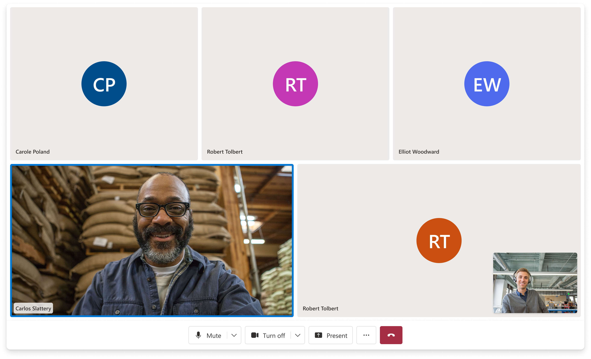
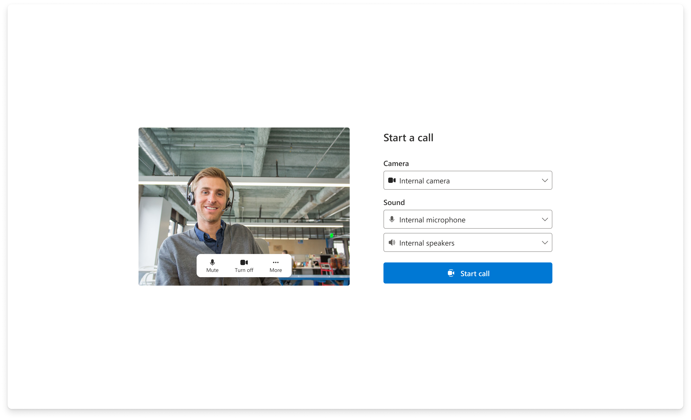
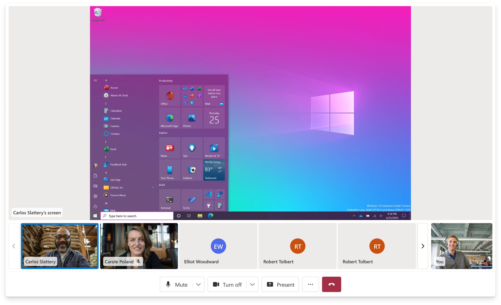
Overview
Developers needed communication experiences that were fast to ship and flexible enough to keep.
Product lead for the ACS Web UI Library. Set product direction, shaped roadmap priorities, and drove cross-functional execution across design, engineering, accessibility, DevRel, and customer-facing workstreams.
The ACS Web UI Library helps developers build web-based calling and chat experiences without starting from scratch. It provides prebuilt composites for full experiences and lower-level UI components for teams that need deeper control.
Model
A product layer between raw infrastructure and finished experiences.
The library existed inside a broader developer-experience ladder. Each layer changed who could build, how quickly they could move, and how much control they retained.
Calling SDK
Raw communication primitives for teams with deep engineering capacity and full control needs.
UI Library
Accessible, customizable React components and composites built on top of ACS.
Sample Builder
A guided configuration and deployment path for prototypes, demos, and scenario storytelling.
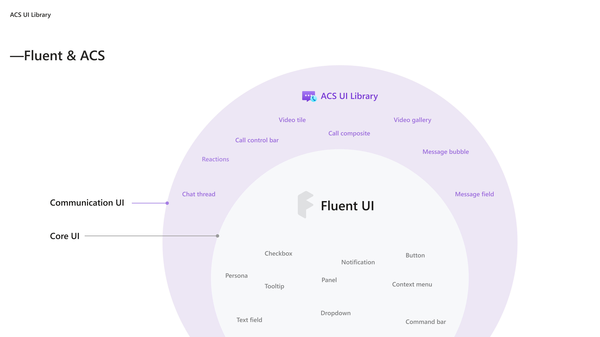
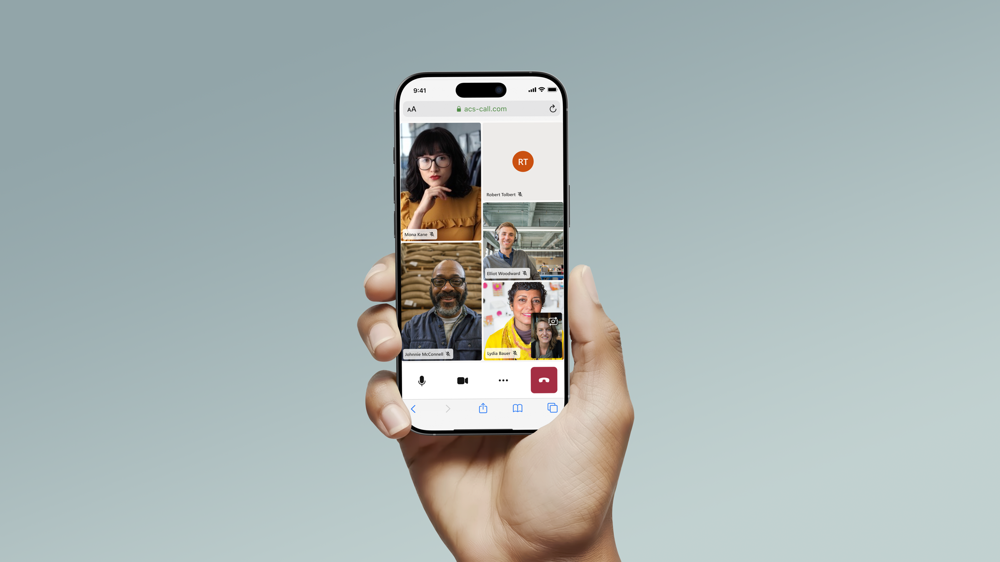
Problem
The promise was speed. The risk was rigidity.
Customers wanted faster ways to launch communication experiences, but adoption was limited by missing features, Teams parity gaps, limited customization, and mismatches with real workflows.
When the library was too thin, it did not reduce enough engineering effort. When it was too rigid, customers outgrew it and built custom UI. The product had to sit in the middle.
The core question was not simply what components to ship. It was how much of the experience should be prebuilt, how much should remain flexible, and where the library should draw the boundary between convenience and control.
Users
The product served developers first, but the defaults touched everyone in the call.
Primary users were developers and solution teams building virtual appointments, contact-center workflows, click-to-call experiences, Teams-adjacent interop, and AI-enhanced calling scenarios.
Indirect users included patients, customers, agents, supervisors, employees, and meeting participants. They rarely knew the UI Library existed, but they inherited its defaults.
A button placement, notification pattern, caption behavior, or device setup flow could affect a telehealth appointment, a financial consultation, or a support call.
Results
The product became one of ACS's most-used surfaces.
11.1M+
Monthly minutes on the UI Library by end of 2025, up from roughly 2M at the start of the year.
5×
Growth in a single year, adding over 100M total minutes in FY25.
200+
Businesses onboarded across healthcare, finance, automotive, retail, and enterprise scenarios.
Design system
The defaults had to work across customers that had almost nothing in common.
Every composite had to function out of the box while still allowing teams to customize branding, layout, actions, and behavior. The same system needed to support a one-on-one telehealth visit, a customer support call, and a larger enterprise meeting.
The design challenge was not only visual consistency. It was deciding which defaults were reliable enough to scale, and which controls needed to remain open for developers.

Selected work
The library matured through a set of high-pressure workstreams.
01
Calling foundations
I shaped the core calling experience that everything else built on: device setup, video gallery, participant management, control bar, lobby states, and screenshare.
The central design tension was completeness without overload. Defaults needed to feel ready for production, while the component model had to stay predictable for developers customizing on top.
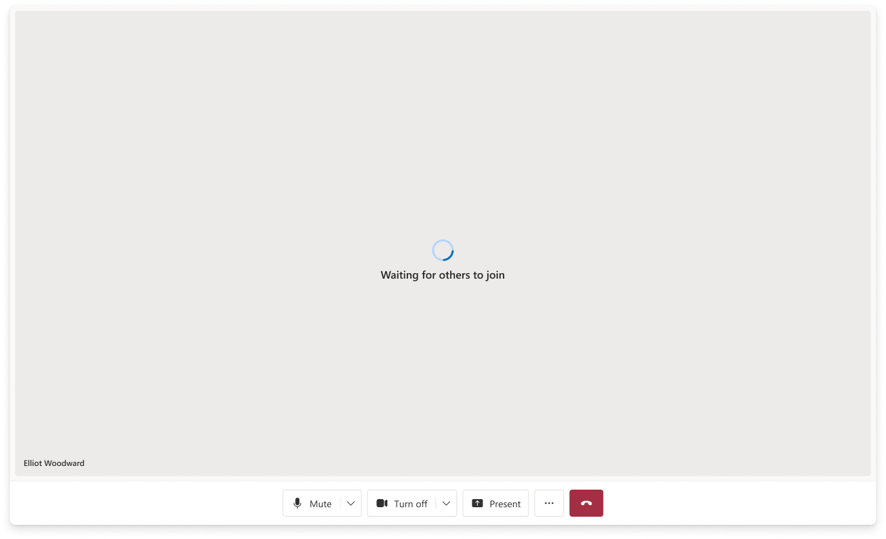
02
Sample Builder
Sample Builder helped developers, PMs, and field teams configure and deploy prototype communication experiences quickly.
The live preview turned configuration into discovery. Instead of asking users to understand the architecture up front, the builder let them see a deployable experience take shape as they made decisions.
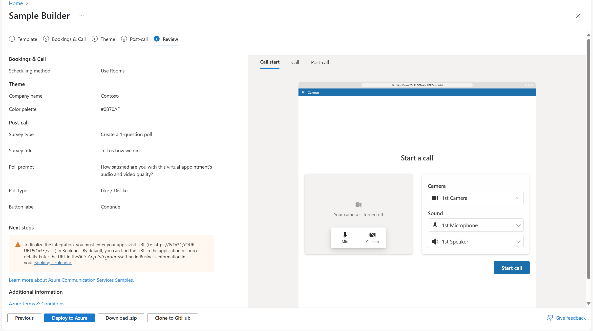
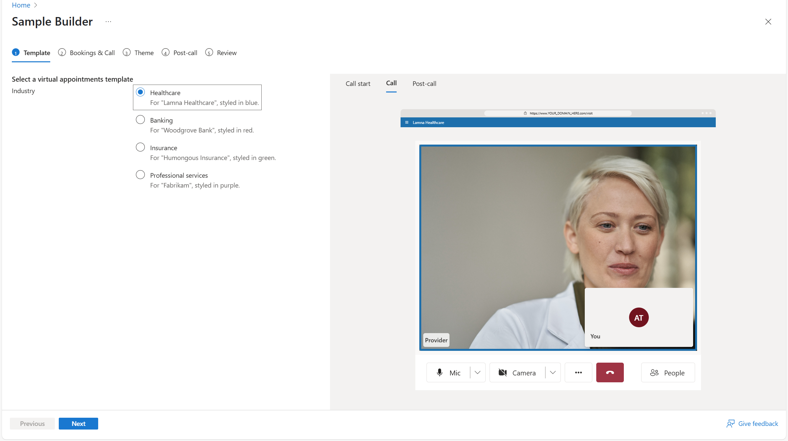
03
Real-Time Text
RTT was a compliance and accessibility workstream that brought real-time text into live calling experiences.
The hard part was legibility. Text appears character by character before a thought is complete, during a live call that may already include video, captions, notifications, and controls.
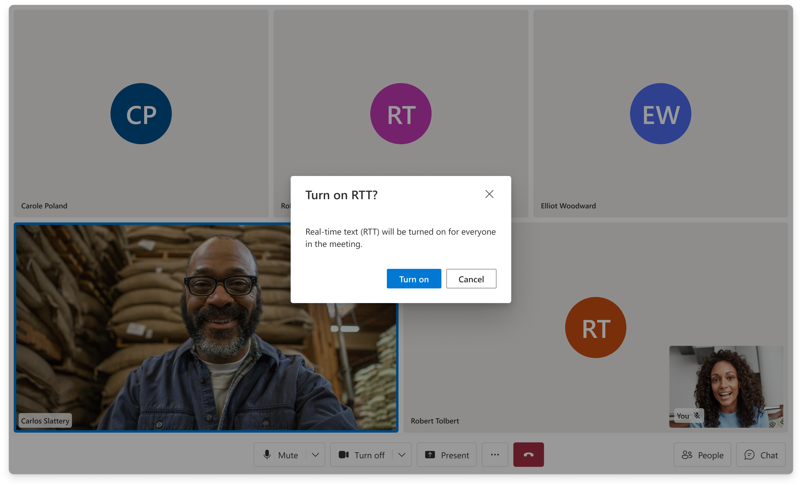
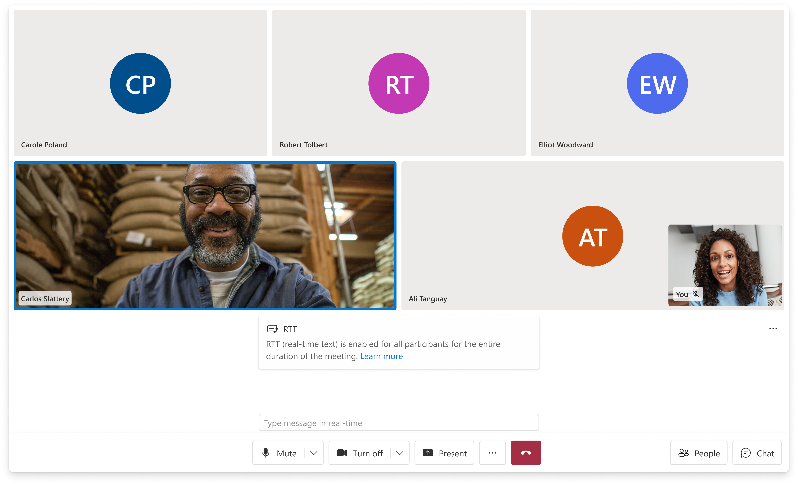
04
Call Summary
Call Summary was the first visible AI feature in ACS. The design challenge was timing and relevance.
The call ends before the summary is ready. The experience needed to communicate progress, then lead with the most useful generated output while keeping the full transcript available underneath.
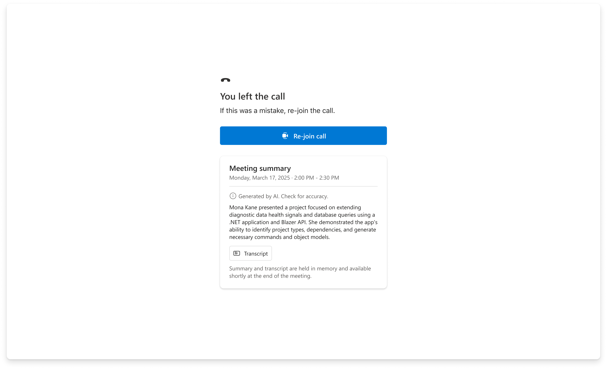
Decisions
Key tradeoffs shaped the product direction.
Prebuilt experiences vs. developer control
Composites accelerated teams quickly, but real customers needed customization. The product direction had to preserve a fast path while exposing enough lower-level flexibility for teams with specific workflows.
Scenario clarity vs. platform sprawl
Every new scenario created pressure for a new composite. The longer-term product challenge was deciding when to build scenario-specific experiences and when to invest in configurable systems that could serve multiple scenarios.
Accessibility and compliance vs. roadmap preference
Features like RTT and explicit consent were not polish items. They were required capabilities that shaped roadmap priority, interaction design, and cross-team execution.
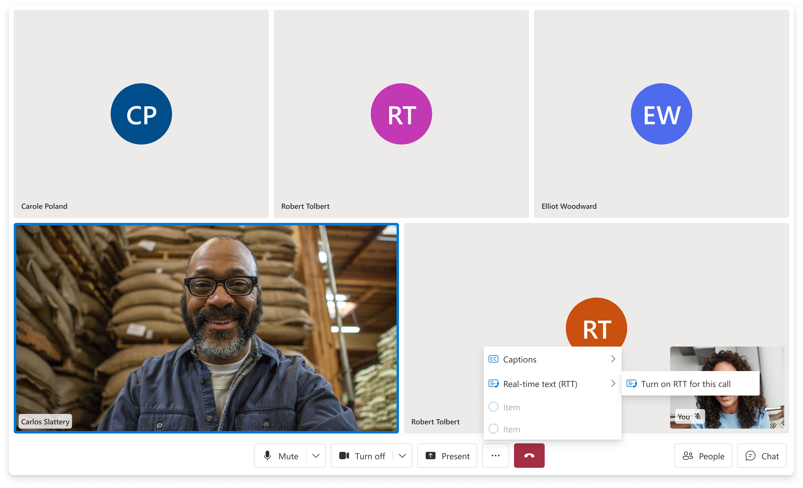
AI showcase vs. production surface
Sample Builder became the low-friction place to demonstrate AI value before every capability belonged inside the durable UI Library surface.

Process
The work was product direction, not just feature delivery.
The product was shaped through customer conversations, backlog grooming, formal specs, design reviews, accessibility requirements, DevRel coordination, Storybook updates, documentation, and launch planning.
I translated adoption barriers into roadmap priorities, then drove workstreams across design, engineering, accessibility, and customer-facing stakeholders.
The operating system mattered because the library was an ecosystem. Components, composites, samples, docs, telemetry, and customer guidance all had to evolve together.
Impact
The library reduced the cost of building communication experiences.
The UI Library gave customers a faster path to production-quality communication UI while preserving the flexibility needed to adapt to their brand, workflow, and scenario.
It helped shift ACS from raw infrastructure toward a more complete developer experience: one where teams could start with a working UI, customize it, and scale into more advanced scenarios over time.
The strongest product outcome was not a single feature. It was a reusable layer that made complex communication experiences easier to build, easier to demo, and easier to adopt.

Next Project
Collective IQ
Lead designer on Microsoft's AI-powered meeting knowledge system. Designing how organizations remember.
View case study →